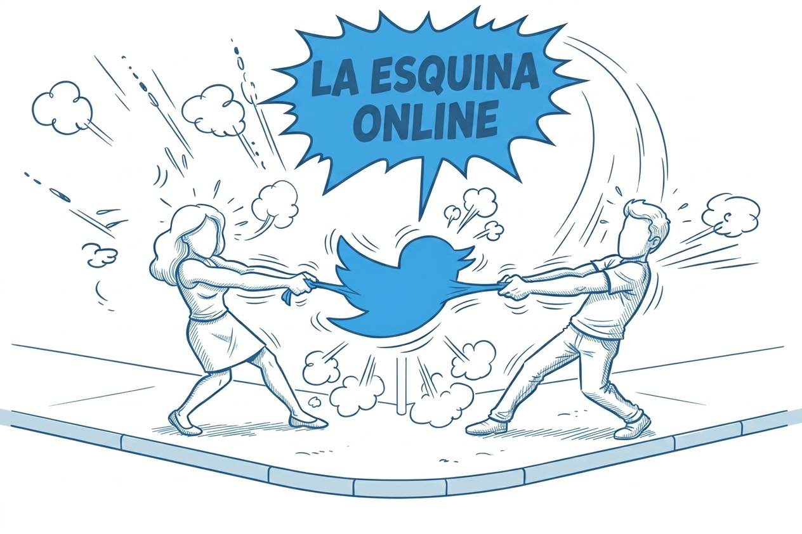

𝕏
◌0
↻0
〃0
♡0

EN LA CALLE ONLINE...
Pegá un link de Twitter para analizar si tiene más comentarios y citas o más retuits y favs.
Tweet original:
Cómo funciona
LA ESQUINA ONLINE usa métricas públicas de un tuit para estimar si el clima visible alrededor del posteo es más de crítica o más de banca. No analiza el texto ni interpreta intención: ordena señales de interacción.
Replies y quote tweets cuentan como señales de fricción. Retweets y likes cuentan como señales de difusión y apoyo.
Aplicamos un índice ponderado para que no todas las interacciones pesen igual.
oposición = replies × 2 + quotes × 3
apoyo = retweets × 1 + likes × 0.1
Con ese balance ubicamos el resultado en un eje entre “lo putean” y “lo bancan”. Si la muestra es muy chica, la app lo marca como zona gris.
Es una heurística de interacción. Depende de que el tuit sea público y de la disponibilidad de fxtwitter, y no interpreta sarcasmo, ironía ni contexto político o cultural.